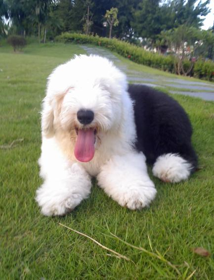

古代牧羊犬
外表
古代牧羊犬是一種健壯、緊湊、正方形比例、和諧的品種。雄性的英國古代牧羊犬一般體重有三十到四十五公斤重（七十到一百磅）；雌性的則有二十七到三十六公斤（六十到八十磅）。從肩膀測量的身高約五十六公分。古代牧羊犬的長毛有灰、灰銀、藍各色，搭配上白色的圖案。古代牧羊犬的底毛防水，而且外層對冷、熱有一定的隔絕效果。
性格
這個品種的犬隻可以被形容為聰明、友善、親切，因此古代牧羊犬可以養做室內或室外皆可，雖然說這種狗給人的第一印象似乎不是那麼的聰明。古代牧羊犬通常和小朋友、其他狗類、其他寵物和訪客和平共處。古代牧羊犬和其他的牧犬一樣需要大量的運動。牠們的脾氣看心情可能好玩、固執。古代牧羊犬是有靈性且忠實的絕佳夥伴，因此常被小朋友當作保母。
古代牧羊犬一代傳一代的趕牧天性是非常驚人的。古代牧羊犬不但會驅導家畜，而且還會保護家人。牠們會把家人從危險的人事物旁推開，而不是咬或用嘴拉扯。古代牧羊犬對其他種類的犬十分友善，而且非常樂意與人遊戲。
歷史
在古代英國西部農村地方為了趕家畜到牧場，農夫們飼養出這種機敏的牧牛、牧羊犬種。此犬的祖先包含了長須牧羊犬及各種歐洲牧羊犬的血統。19世紀時，古英國牧羊犬廣為農業地區使用。1873年，首次在英國展示會上公開亮相。
飼養注意事項
毛髮易糾結，每天都要理毛、梳毛
耳朵又大又深，需定期清理耳朵
雙層毛犬種，每當洗完澡後，毛髮皮膚都要徹底吹乾，否則容易有皮膚病
個性較不獨立、黏人，需要飼主大量陪伴關注
容易罹患白內障及其他眼睛疾病
